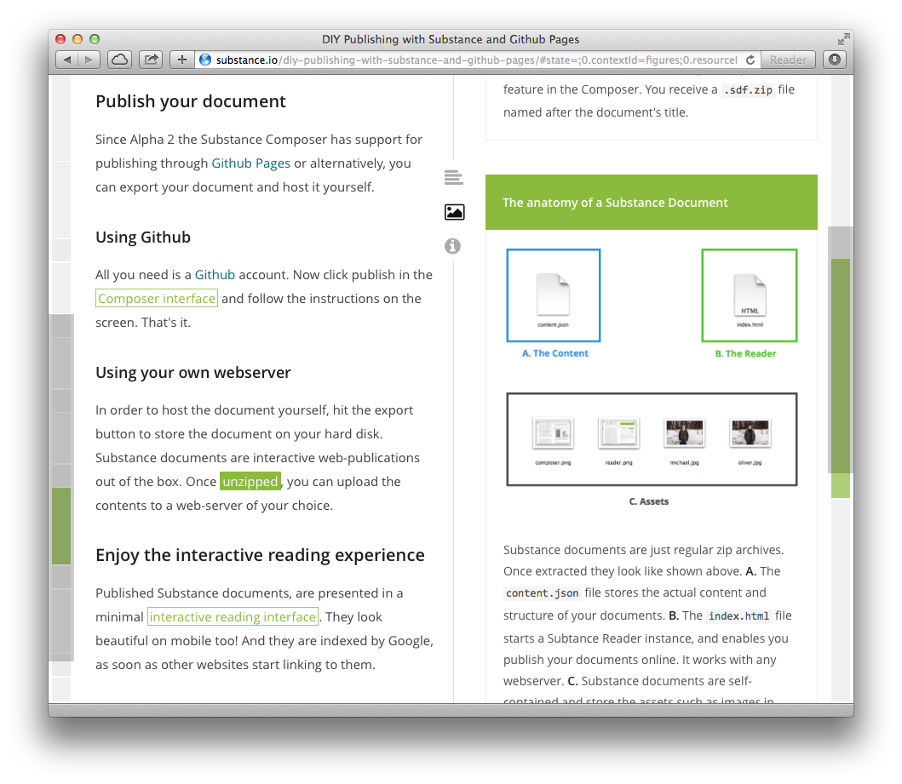

Substance provides an extensive, customizable content creation and annotation framework that enables user-centric interfaces and automatic data processing via your web-browser. Thanks to its modular nature it creates an ideal environment for custom integration scenarios. Substance releases all building blocks as open source. You can find them on Github.
Learn how to create a Substance Article from a Markdown file, modify that document in the Substance Composer and publish it on the web.
Read the complete developers Manual.
An interactive Reading interface for Substance documents.
The Substance Article is a reference implementation of the Substance Document Model. It features basic content types such as paragraphs, headings, figures and code blocks.
Download Version 0.3.0 for the browser or npm install substance-article for use with Node.js
The Substance Converter allows users to turn existing formats into Substance documents and vice versa. Using Pandoc we support a wide range of input and output formats, such as Markdown, Media Wiki and DocBook, but also Word processor formats such as Microsoft Word docx and OpenOffice/LibreOffice ODT.
Install with NPM: npm install substance-converter
The Substance Reader is an integral part of the Substance technology stack used for displaying Substance Documents on digital devices.

The easiest way to get started is downloading an arbitrary Substance article (e.g. this one) and extracting its contents. In the index.html file you find the relevant code in order to construct a Substance Reader instance.
var app = new Substance.Reader({
document: data
});
$(function() {
app.start();
});
The Reader takes a Substance Document serialized as JSON.
Substance Article helps with the creation and transformation of digital documents. It ensures consistency, separates content from presentation and provides an easy to use API.
Install via NPM or use the browser distribution.
npm install substance-article
Create a new article.
var Article = require("substance-article");
var doc = new Article();
Add some text.
doc.create({
id: "p1",
type: "text",
content: "Hello World"
});
New nodes are just stored in a graph-like object space. In order to make them show up you have to show them
doc.show("content", ["p1"]);
Let's annotate our document.
var a1 = {
"id": "a1",
"type": "remark",
"range": [7, 11],
"path": ["p1", "content"],
"title": "World",
"description": "World is a common name for the whole of human civilization, ..."
};
doc.create(a1);
Export document to JSON.
doc.toJSON();
This just scratches the Surface of what you can do. Since version 0.3.0 the Substance Article even features a File node type which allows you to stick binary data to your Substance Article. To learn about its usage see the Substance Document test suite